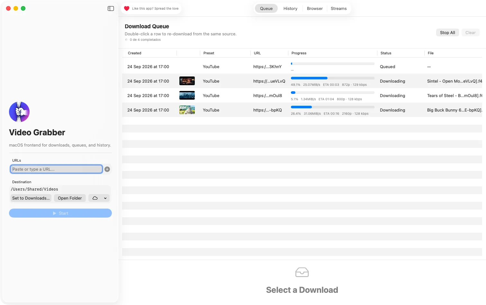
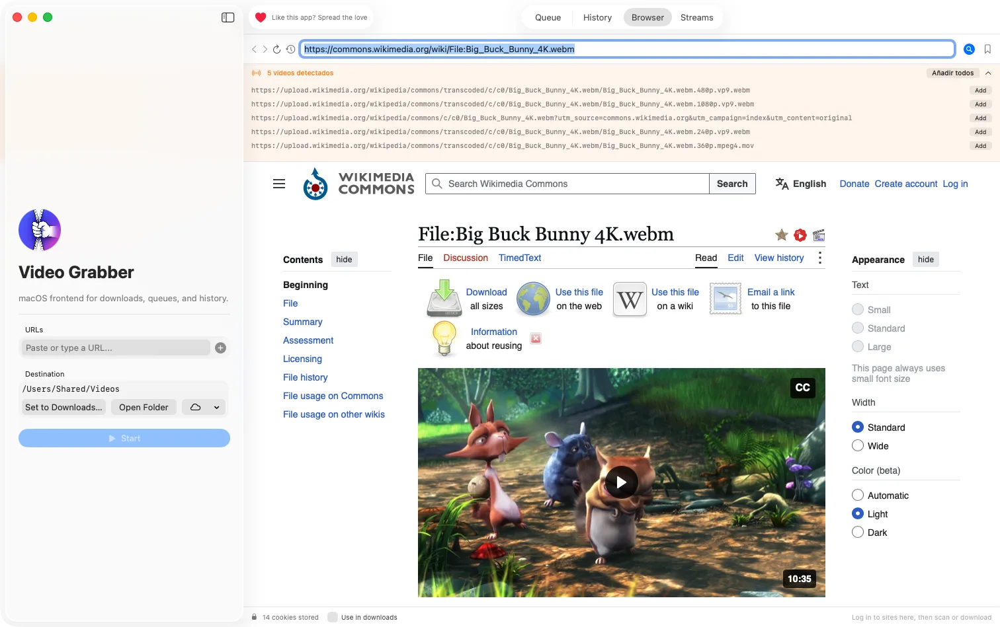
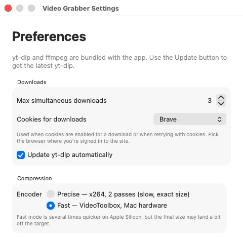

Guardá cualquier video en tu Mac.
Video Grabber descarga de YouTube, Vimeo, Instagram, TikTok, X y más de 1.000 sitios. Pegás el link y apretás Iniciar. Sin Terminal, sin cuenta, y es gratis.
Para Mac con Apple Silicon (M1 o posterior) y macOS 14.6 o más nuevo. Notarizada por Apple.

Todo lo que hay entre un link y un archivo
-
Pegás links, recibís archivos
Poné en fila todos los links que quieras. Se descargan hasta diez a la vez, cada uno con su progreso, velocidad y tiempo restante.
-
Elegí la calidad
Tomá la mejor disponible, o elegí la resolución y el formato exactos. Guardá solo el audio en MP3.
-
Convertí, recortá, sumá subtítulos
Convertí a MP4, MOV o MKV, quedate solo con una parte del video y descargá subtítulos en español o inglés.
-
Grabá transmisiones en vivo
Mirá y grabá streams HLS, RTSP y RTMP, o directos de YouTube y Twitch, y programá grabaciones con anticipación.
-
Descargas que se recuperan
Si un sitio corta una descarga, se reintenta sola. El motor de descarga, yt-dlp, se actualiza solo para que los cambios de los sitios no rompan nada.
-
Gratis y de código abierto
Sin publicidad, sin cuenta, sin rastreo. El código es público, con licencia MIT.

Encuentra el video en cualquier página
Abrí una página en el navegador integrado y Video Grabber lista los videos que reproduce, incluso en sitios que ningún descargador soporta.
¿Tenés la sesión iniciada en algún sitio? Las descargas pueden usar tus cookies del navegador integrado, Firefox, Chrome, Brave o Edge, así que también funcionan los videos que piden login.
Que entre donde tiene que entrar
¿Necesitás un video de menos de 25 MB para un mail o un chat? Hacé click derecho en un video, o en varios, y comprimilos al tamaño que elijas.
El modo rápido usa el codificador por hardware de tu Mac y es varias veces más veloz. El modo preciso tarda más y queda más cerca del tamaño pedido.

Se instala en un minuto
- Descargá el .dmg con el botón de arriba de esta página.
- Arrastralo a Aplicaciones en la ventana que se abre.
- Abrí Video Grabber Está notarizada por Apple, así que abre sin advertencias.
Preguntas
¿Es gratis?
Sí. Video Grabber es gratis y de código abierto, con licencia MIT. No tiene publicidad, no pide cuenta y no hay versión paga.
¿Con qué sitios funciona?
Con todos los que soporta yt-dlp, más de 1.000, entre ellos YouTube, Vimeo, Instagram, TikTok, X, Facebook y Twitch. En otros sitios, el navegador integrado muchas veces encuentra el video que reproduce la página.
¿Funciona en Mac con Intel?
No. La versión actual necesita una Mac con Apple Silicon (M1 o posterior) y macOS 14.6 o más nuevo.
¿Es seguro instalarla?
Sí. Está firmada con un Developer ID de Apple y notarizada por Apple, que la revisa en busca de malware. El código fuente es público en GitHub.
¿Puedo descargar cualquier video?
Depende del video y de las leyes de tu país. Descargá videos que tengas derecho a guardar: los tuyos, obras de dominio público o contenido con una licencia que lo permita, como las películas Creative Commons de estas capturas.
Lista para cuando tengas un link.
Descargar para Mac Versión 1.14.0, 88 MB